17. 谱系追踪#
关键要点
记住， 实验数据的分辨率 仍然有限。统计分析 和 质量评估 ——这些都应针对谱系信息来进行，以便确定哪些个体适合做谱系重建。如下文所示，已有一些专门的工具可以方便地提供相关统计数据。
通常很难预先判断 哪个算法 在重建上表现最好，而且即便是表现良好的算法，也可能突出谱系中不同的部分。建议你 应用一些算法 用于重建以进行比较。
正如任何缺乏确定真值（ground truth）的分析一样， 任何结论都必须谨慎地得出。首先也是最重要的一点：把谱系与 indel 热图一起可视化，以确认没有出现明显的重建错误，这始终是个好习惯（关于如何用肉眼评估重建准确性的更多技巧，见“重建谱系”一节）。此外，得出更有力结论的一个有效策略，是在用不同算法推断出的同一谱系上，比较各自的下游分析结果。当然，与大多数涉及计算结论的事情一样，我们通常建议在实验系统中对结论加以验证。
环境设置
安装 conda:
在创建环境之前，请确保 conda 已安装在您的系统中。
保存 yml 内容:
将 yml 选项卡中的内容复制到名为
environment.yml的文件中。
创建环境:
打开终端或命令提示符。
运行以下命令：
conda env create -f environment.yml
激活环境:
创建好环境后，使用以下命令激活它：
conda activate <environment_name>
替换
<environment_name>，名称就是在environment.yml文件中指定的那个。在 yml 文件里，它看起来像这样：name: <environment_name>
验证安装:
通过运行以下命令，检查环境是否创建成功：
conda env list
name: lineage-tracing
channels:
- defaults
- conda-forge
dependencies:
- conda-forge::python=3.12.9
- pip:
- git+https://github.com/YosefLab/Cassiopeia@master#egg=cassiopeia-lineage
- scanpy==1.11.0
- session_info
- lamindb[bionty,jupyter]
TL;DR：我们简要概述能够同时测量细胞状态与谱系历史的实验方法，以及现有的计算分析流程，并以一个有代表性的例子——追踪小鼠肺癌模型中的肿瘤发育——加以说明。
17.1. 动机#
细胞谱系在生物学中无处不在。也许最著名的例子是胚胎发生：像人这样的生物从单细胞（即受精卵）发育而来的过程。在这一过程中，随后的细胞分裂产生亚细胞，并随时间推移形成一个个完整的“谱系”，在发育中的胚胎里承担专门的角色。数百年来，这一过程惊人的复杂性激发着科学家的想象；在过去的一个半世纪里，高通量测序方法、以及用于可视化和刻画这一过程的新“谱系追踪”技术的发展，进一步加深了我们对它的理解 [Woodworth et al., 2017]。其中最令人兴奋的一些方法，能让研究者把细胞状态的测量与其历史模型联系起来，从而为“分化轨迹是如何展开的”提供了一扇窗口。
单细胞实验方法与谱系追踪方法的结合，使数据集的复杂度呈指数级增长，因而需要开发新的计算方法来分析它们。因此，开发新的计算方法来处理这些数据集，一直有着强烈的需求 [Gong et al., 2021]。过去这五年大量借鉴群体遗传学的文献，见证了进化生物学中的传统概念与前沿基因组工程技术之间令人振奋的交汇。
在本章中，我们简要概述这些新技术，并聚焦于现有的计算分析流程——用于分析它们的输出、并从中提取生物学洞见。需要说明的是，我们的示例特别关注基于 CRISPR/Cas9 的“演化型”谱系追踪场景。关于其他有用的实验替代方案的更完整介绍，我们建议感兴趣的读者参阅 McKenna 与 Gagnon 等人的出色综述。[McKenna and Gagnon, 2019], Wagner 与 Klein [Wagner and Klein, 2020],以及 VanHorn & Morris [VanHorn and Morris, 2021].
17.2. 谱系追踪技术#
谱系追踪技术的目标，是推断所观察细胞之间的谱系（即祖先）关系。这里有两个主要变量需要考虑：规模和分辨率。经典方法在很大程度上依赖肉眼观察：例如，在 20 世纪 70 年代，Sulston 及其同事推导出了线虫的第一个发育谱系 C. elegans ——做法是在显微镜下一丝不苟地观察细胞分裂 [Sulston et al., 1983]。这类方法虽然在该领域的发展中发挥了不可或缺的作用，但无法推广到发育谱系更具随机性的复杂生物。
在过去二十年里，革命性的测序实验方法和微流控设备的发展，推动了新的、多样化的谱系追踪方法的出现 [Wagner and Klein, 2020]。为了消化种类繁多的技术，把这些方法分成以下几类会很有帮助：“prospective或“retrospective”:
前瞻性谱系追踪 类方法使研究者能够追踪单细胞的后代（即一个“克隆” 或“克隆群体”）。通常的做法是在细胞中引入一个可遗传的标记（称为“克隆始祖”），并让它代代相传。
回溯性谱系追踪 类方法则利用在细胞中观察到的变异（例如自然发生的基因突变）来推断其谱系模型（或称“phylogeny”），以此概括一个克隆群体中的细胞分裂历史。
已经开发出几种前瞻性追踪克隆群体的方法：例如，可以利用组织特异性启动子下的重组酶来激活荧光标记，使其作为某一特定组织谱系的可遗传标记 [Weissman and Pan, 2015], [Nagy, 2000], [Liu et al., 2020], [Liu et al., 2020], [He et al., 2017]。或者，可以用慢病毒转导把随机 DNA 条形码整合到细胞基因组中，从而提供一种可遗传标记，再借助测序读出来解析克隆身份 [Gerrits et al., 2010], [Biddy et al., 2018], [Weinreb et al., 2020], [Yao et al., 2017]。这些方法虽然可扩展性很高、而且往往不需要繁重的基因组工程，但它们只能报告克隆层面的性质，例如克隆的大小和组成。
回溯性谱系追踪器克服了这些限制，并且相比前瞻性追踪器还有一个额外优势：它能报告关于 sub克隆动力学的性质。传统上，这是通过利用细胞间的自然变异来重建细胞分裂历史实现的，例如单核苷酸变异 [Vogelstein et al., 2013], [Turajlic and Swanton, 2016], [Bailey et al., 2021], [Gerstung et al., 2020], [Abyzov and Vaccarino, 2020], [Bizzotto et al., 2021], [Ju et al., 2017] 或拷贝数变异（copy-number variation） [Patel et al., 2014], [Gao et al., 2021]。虽然这种方法至今仍被广泛而成功地用于研究人类肿瘤或组织发育史，但实验者对突变发生的频率和位置几乎或完全无法控制。在实验模型中，则有机会在保留回溯性追踪器优点的同时，通过设计“可演化”的谱系追踪器来改进其不足。这类演化型追踪器通常是为细胞设计一个能够积累突变的“暂存区”（scratchpad，亦称“靶位点”） [Wagner and Klein, 2020], [McKenna and Gagnon, 2019]。例如，本章重点介绍的一种流行方法，利用 Cas9 在靶位点引入插入和缺失（即“indel”） [McKenna et al., 2016], [Spanjaard et al., 2018], [Chan et al., 2019], [Frieda et al., 2017], [Kalhor et al., 2018], [Alemany et al., 2018]。通过这种方式，细胞谱系会随时间累积可遗传的突变，这些突变随后可用高通量测序平台读出，并用来推断代表细胞谱系模型的系统发育关系（phylogeny）。在此基础上，又涌现出一些提升数据可解释性的新技术：例如 peCHYRON [Loveless et al., 2021] 和DNA打字机 [Choi et al., 2022] 等方法引入了有序的、按顺序进行的编辑，从而能更有把握地评估谱系历史。
这两类谱系追踪方法都能借助单细胞多组学谱分析方面的相关进展。例如，研究者已经常规地使用单细胞 RNA-seq（scRNA-seq）来同时读出单细胞的功能状态及其谱系关系 [Raj et al., 2018], [Chan et al., 2019], [Weinreb et al., 2020], [Wagner and Klein, 2020], [Spanjaard et al., 2018]。这种多模态的读出，为新的计算方法创造了机会，我们将在下文详述。
如上所述，本章我们提供 一份详细的操作指南，讲解如何分析来自基于 CRISPR/Cas9 的演化型谱系追踪器的数据。
上面我们用到了几个可能让初次阅读的读者感到困惑的术语。简而言之，在继续之前，我们先给出一些定义：
- 克隆群体（或称克隆）：某个祖细胞的全部后代。
- 克隆始祖：产生某个克隆群体的最初那个单细胞。
- 亚克隆分辨率：对一个克隆群体内细胞子集之间关系的洞见。
- 系统发育（phylogeny）：一个克隆群体的细胞分裂史模型，以树的形式表示。
- 暂存区（或称靶位点）：一段人工合成的外源区域，能够在演化型谱系追踪技术中积累定向变异。
17.3. 不断演变的谱系追踪数据分析流程概览#
在深入分析我们的示例数据集之前，我们先概述一下用于分析演化型追踪器所生成数据的计算流程（基于 [Jones et al., 2020]）。总的来说，对于这些系统，分析将从一个 amplicon 靶位点文库的原始测序数据开始（通常来自像 10X Chromium 这样的常规 scRNA-seq 平台）。视所用技术而定，每个被测序的扩增子（amplicon）长度在 150–300 bp 之间；对于基于 CRISPR/Cas9 的演化型追踪器，每条读数会包含一个或多个 Cas9 切割位点。在这类数据的预处理中，分析人员的任务是把读数比对到参考序列上，并识别出任何突变（例如 indel）。
虽然这些数据集的预处理是关键的一步，但限于篇幅，我们着重介绍以预处理后的测序数据作为输入的分析流程，并请读者参阅一份外部的预处理教程，其地址见 here.
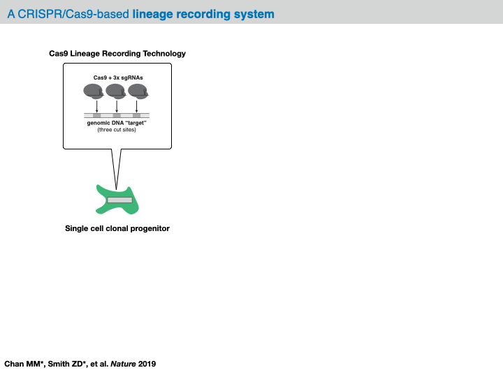
在大多数分析框架中，对原始测序读数的预处理会生成一种数据结构，称为 字符矩阵，它汇总了每个细胞在各靶位点上观察到的突变。在这个数据结构中，每一行是一个细胞（或“样本”），每一列是一个靶位点（或“特征 character”），而（行，列）处的值是类别变量，表示该细胞在那个特定切割位点上所观察到的 indel 身份（或“特征状态 character-state”）。视所用技术而定，这些字符矩阵可以涵盖 100 到 10,000 个样本、以及多达 100 个特征。
至此，这一数据结构把演化型谱系追踪实验的技术细节抽象掉了，从而提供了一个机会：对这些细胞用计算方法推断出一棵 系统发育树。具体来说，目标是为字符矩阵中的每个细胞学习出一个层次化的树结构。在这棵树中，每个节点代表一个样本，每条边代表一种谱系关系。重要的是，我们往往只观测到这棵树的 leaves （叶节点 leaves），而把任何未观测到的内部节点集合称为 ancestral 节点。（需要说明的是，我们倾向于宽松地使用“系统发育树”一词，尽管它有精确的定义。现实中，我们往往推断的是一棵概括细胞间关系的分支图（cladogram）。）
从字符矩阵中推断系统发育树有许多算法选择，一般可以分为“基于特征”和“基于距离”的方法:
Character-based:通过所有可能的树形结构进行组合搜索，同时寻求优化一个定义在这些特征上的函数(例如，在字符中观察到的变异情况下进化历史的可能性).
最大简约法（Maximum Parsimony） [Cavalli-Sforza and Edwards, 1963]: 找到一个具有最小突变数量的树。
最大似然（Maximum Likelihood） [Felsenstein, 1981]：找到一棵具有最可能突变历史的树（关于一个专门用于谱系追踪的算法，我们建议读者参阅 GAPML[Feng et al., 2021]).
贝叶斯系统发育推断 [Huelsenbeck et al., 2001]：找到一棵在给定观测突变的条件下、使进化史后验概率最大化的树。
Distance-based：使用细胞间距离的概念（例如它们共享的编辑数目，记作 \(\delta\)）来推断系统发育树，通常以多项式时间运行。基于距离的方法虽然能快得多，但需要迭代地寻找最佳的细胞间相异度函数，而这同样可能很耗时。
Neighbor-Joining [Saitou and Nei, 1987]：通过迭代地寻找“按特定准则使分支长度最小”的细胞对，从给定的细胞间相异度矩阵生成一棵树。
UPGMA [Sokal, 1958]：用比 Neighbor-Joining 更快的算法，从给定的细胞间相异度矩阵生成一棵树。不过，它对生成准确的树有更严格的要求。
传统上，从这类数据推断系统发育是颇具挑战的，往往需要应用可扩展性很差的组合算法。当把这类算法应用到前面所述的单细胞演化型谱系追踪器时，这些问题会进一步恶化，因为被采样的细胞数往往比传统系统发育研究中所评估的物种数大一个数量级。非随机的缺失数据和不均匀的编辑分布，又使这些挑战雪上加霜。幸运的是，近来已经出现了一些算法进展，用于应对演化型谱系追踪器的建模挑战 [Jones et al., 2020], [Feng et al., 2021], [Gong et al., 2021]，以及借助深度分布式计算把推断扩展到极其庞大的树 [Konno et al., 2022]。在实践中，大多数应用在做树推断时，使用的是最大简约法（maximum-parsimony）的变体，或 Neighbor-Joining 等基于距离的方法。不过，这目前仍是一个活跃的发展领域，更深入的讨论见“结论”。
在完成系统发育树重建之后，有几种选择可用于 下游分析。例如，人们可以了解发育史上细胞状态变化的速率，或细胞在群体中分裂的相对倾向。下面，我们将通过代码示例展示这些不同组件如何拼合在一起，从而对细胞谱系背后的动态过程获得基本的洞见。
17.4. Cassiopeia 用于谱系追踪分析#
在这个教程中，我们将主要利用 Cassiopeia，是少数几个用于谱系追踪分析的软件包之一 [Jones et al., 2020].
一般来说, Cassiopeia 是一个软件套件，用于处理和分析演化型谱系追踪的测序数据。该软件包含四个主要模块：
把来自演化型谱系追踪数据集（例如基于 CRISPR/Cas9 的谱系追踪器）的测序读数预处理成字符矩阵。
用代码库中提供的若干算法之一，从这些字符矩阵重建系统发育（phylogeny）
提供分析工具，从重建出的系统发育中得出见解。
为基准测试目的，模拟逼真的系统发育和谱系追踪数据
虽然这些模块在 Cassiopeia 流程中协同工作，但它们彼此之间也是相互独立的。例如，用户可能用另一个软件套件来做谱系推断，但仍使用本 Cassiopeia 重建后分析的代码库。
关于更多的安装指南和补充文档，请读者参阅 here.
17.5. 追踪小鼠肺癌模型中的肿瘤发育#
在本案例研究中，我们将利用最近一篇研究中所介绍的工作 [Yang et al., 2022]。简而言之，在这项研究中，作者把一个演化型的、基于 CRISPR/Cas9 的谱系追踪器，整合进了非小细胞肺癌的 KP 小鼠模型 [DuPage et al., 2009]。具体来说，这个小鼠模型携带致癌性的 Kras 和 Tp53 突变，这些突变在天然条件下并不表达。然而，一旦通过慢病毒吸入引入 Cre 重组酶，这些致癌突变就会在肺气道上皮的单细胞中被激活，从而诱发肿瘤。在这项研究中，基于 CRISPR/Cas9 的谱系追踪器也受到类似的调控，因此会在肿瘤被诱导的同时一并被激活。
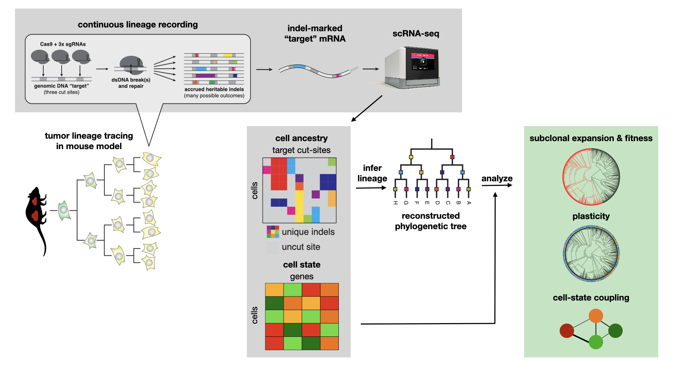
借助这一系统，作者在大约 4.5–6 个月的时间里，从单细胞起源开始追踪肿瘤，直到收获具有侵袭性的转移性肿瘤。在解离肿瘤之后，作者对单细胞的谱系追踪靶位点和 RNA 含量都进行了刻画。由此得到一个大型数据集，涵盖 100 多个肿瘤、7 万多个细胞，同时包含谱系信息和 scRNA-seq 信息。
在本教程中，我们将展示用户如何利用处理好的靶位点数据，来研究谱系的一些有趣的动态特性。在整个案例研究中，每个谱系都对应于从小鼠肺中采样的一个原发性肿瘤。
在继续之前，请确保你清楚我们将使用哪些数据类型。如上所述，我们手头有 scRNA-seq 计数矩阵，以及另外单独的谱系追踪数据（它可以有多种形式；下面，我们从 等位基因表（allele table） 开始，它汇总了在某个细胞内每个靶位点上观察到的 indel。下文会对此作更多说明）。这两类数据将分别处理：谱系追踪数据用来推断谱系，scRNA-seq 数据则用来解释这些谱系的有趣行为。
对于下文分析的数据集，每个细胞被设计了大约 10 个靶位点，每个靶位点串联携带 3 个 Cas9 切割位点。每个靶位点都用一个独特的整合条形码（简称“intBC”）标记。总的来说，我们可以预期在每个细胞中观察到 3×（靶位点数）个能够积累突变、可用于谱系推断的特征。关于测序盒（cassette）结构的更多信息，请参见 Chan、Smith 等人。《哺乳动物胚胎发生的分子记录》。Nature，2019.
17.5.1. 下载数据#
此数据公开托管于 Zenodo 上，我们可以按如下方式下载数据：
!wget "https://zenodo.org/record/5847462/files/KPTracer-Data.tar.gz?download=1"
--2022-06-30 10:28:22-- https://zenodo.org/record/5847462/files/KPTracer-Data.tar.gz?download=1
Resolving zenodo.org (zenodo.org)... 137.138.76.77
Connecting to zenodo.org (zenodo.org)|137.138.76.77|:443... connected.
HTTP request sent, awaiting response... 200 OK
Length: 1304975216 (1.2G) [application/octet-stream]
Saving to: ‘KPTracer-Data.tar.gz?download=1’
KPTracer-Data.tar.g 100%[===================>] 1.21G 1.49MB/s in 7m 3s
2022-06-30 10:35:27 (2.94 MB/s) - ‘KPTracer-Data.tar.gz?download=1’ saved [1304975216/1304975216]
!tar -xvzf KPTracer-Data.tar.gz?download=1
17.5.2. 环境设置。#
在进入本笔记本的分析之前，我们先搭建好运行环境。
import cassiopeia as cas
import matplotlib.pyplot as plt
import numpy as np
import pandas as pd
import scanpy as sc
from cassiopeia.preprocess import lineage_utils
17.5.3. 审查数据#
在对靶位点测序数据进行预处理之后， Cassiopeia 使用一个 allele_table 来汇总在每个靶位点整合上观察到的突变。
如上所述，手头这个系统每个细胞应该有约 10 个靶位点，每个靶位点包含三个 Cas9 切割位点。标记为 intBC 表示靶位点，而标记为 r* 的列表示该靶位点上的 Cas9 切割位点。每个切割位点上的突变以 CIGAR 字符串的形式存储，表示所观察到的 indel 的大小和类型。
本表中还可以存储其他元数据，例如与该靶位点分子相关的 UMI 和读数总数、该分子来自哪个细胞、以及该细胞属于哪个肿瘤。
allele_table = pd.read_csv(
"KPTracer-Data/KPTracer.alleleTable.FINAL.txt", sep="\t", index_col=0
)
allele_table.head(5)
/var/folders/kt/wk3kbll507v4h18f8nmbzkl80000gq/T/ipykernel_65366/3031588044.py:1: DtypeWarning: Columns (12) have mixed types. Specify dtype option on import or set low_memory=False.
allele_table = pd.read_csv("KPTracer-Data/KPTracer.alleleTable.FINAL.txt", sep='\t', index_col = 0)
| cellBC | intBC | r1 | r2 | r3 | allele | sampleID | UMI | readCount | Tumor | MetFamily | ES_clone | |
|---|---|---|---|---|---|---|---|---|---|---|---|---|
| 0 | L9.TTTGTCATCTGTCAAG-1 | TTCCCTATTTGCTA | CGCCG[111:2D]AAATG | GATAT[None]CTCTG | AATTC[220:1I]GGCGGA | CGCCG[111:2D]AAATGGATAT[None]CTCTGAATTC[220:1I... | L9 | 54 | 796 | 3724_NT_T1 | 3724_NT_T1 | 2E1 |
| 1 | L9.TTTGTCATCTGTCAAG-1 | TGTTTTTGTCTGCA | CGCCG[111:1I]AAAAAA | CATGT[151:19D]TGGTT | TTAAT[218:2D]GCGGA | CGCCG[111:1I]AAAAAACATGT[151:19D]TGGTTTTAAT[21... | L9 | 13 | 209 | 3724_NT_T1 | 3724_NT_T1 | 2E1 |
| 2 | L9.TTTGTCATCTGTCAAG-1 | TGTGAAGGTCAATA | CCGAA[113:49D]GATAT | CCGAA[113:49D]GATAT | AATTC[220:5D]GGACA | CCGAA[113:49D]GATATCCGAA[113:49D]GATATAATTC[22... | L9 | 68 | 1193 | 3724_NT_T1 | 3724_NT_T1 | 2E1 |
| 3 | L9.TTTGTCATCTGTCAAG-1 | TCAGGCGATGCGAA | CGCCG[111:1I]AAAAAA | CGATA[166:1I]TTCTCT | TAATT[219:2D]CGGAG | CGCCG[111:1I]AAAAAACGATA[166:1I]TTCTCTTAATT[21... | L9 | 43 | 745 | 3724_NT_T1 | 3724_NT_T1 | 2E1 |
| 4 | L9.TTTGTCATCTGTCAAG-1 | TATGATTAGTCGCG | CGCCG[111:1D]AAAAT | GATAT[167:54D]CGGAG | GATAT[167:54D]CGGAG | CGCCG[111:1D]AAAATGATAT[167:54D]CGGAGGATAT[167... | L9 | 27 | 530 | 3724_NT_T1 | 3724_NT_T1 | 2E1 |
我们将聚焦于没有任何额外扰动的 KP 肿瘤数据：
all_tumors = allele_table["Tumor"].unique()
primary_nt_tumors = [
tumor
for tumor in all_tumors
if "NT" in tumor and tumor.split("_")[2].startswith("T")
]
primary_nt_allele_table = allele_table[allele_table["Tumor"].isin(primary_nt_tumors)]
如上所述，我们预计每个肿瘤群约有 10 个独特的 intBC（即靶位点）。下面我们概述数据集的一些关键统计数据。
17.5.3.1. 每个肿瘤的 intBC 数量#
分析人员感兴趣的一个统计量是 每个肿瘤的 intBC 数 ，因为它能反映出每个克隆群体的信息容量。
在最近的应用中([Yang et al., 2022]），我们发现高质量的克隆通常有 5 到 30 个 intBC（对应 15–90 个特征）。通过绘制每个肿瘤的 intBC 数目，我们可以确保不存在需要在重建前过滤掉的异常肿瘤。
primary_nt_allele_table.groupby(["Tumor"]).agg({"intBC": "nunique"}).plot(kind="bar")
plt.ylabel("Number of unique intBCs")
plt.title("Number of intBCs per Tumor")
plt.show()
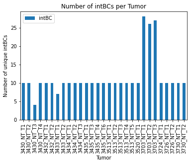
正如所料，我们观察到大多数肿瘤有大约 10 个 intBC，而有一个肿瘤观察到的 intBC 很少，另有少数报告超过 25 个 intBC。接下来，我们将讨论过滤掉低质量肿瘤的策略。
17.5.3.2. 每个肿瘤的大小#
我们也关心将要重建的肿瘤的规模。通常观察到的克隆在 100 到 10,000 个细胞之间。同样，我们要确保没有明显的离群者——具体来说，是那些太小、不适合重建的克隆（通常少于 100 个细胞）。
primary_nt_allele_table.groupby(["Tumor"]).agg({"cellBC": "nunique"}).sort_values(
by="cellBC", ascending=False
).plot(kind="bar")
plt.yscale("log")
plt.ylabel("Number of cells (log)")
plt.title("Size of each tumor")
plt.show()
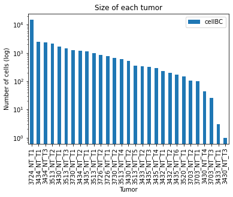
我们看到，有一个非常大的克隆（约 30,000 个细胞），其余克隆都在预期范围内，报告的细胞数在 1,000 到 5,000 之间。
17.5.4. 为谱系重建准备数据#
基于 Cas9 的追踪器有一个普遍特点：某些插入和缺失要比其他的常见得多。这可能是一个重要的建模隐患，因为高概率的编辑可能彼此独立地多次发生，从而可能让分析者错误地认为两个细胞彼此相关。
Cassiopeia 内置了一个实用工具，通过统计某个 indel 在不相关的肿瘤或 intBC 中出现的次数，来估计插入和缺失的先验概率。
在观察所见 indel 的频率时，我们看到少数 indel（小的缺失或插入）在克隆中相当频繁地出现。另一方面，我们也观察到一些只在单个克隆中出现的编辑。由于频率上的差异，分析者应当设法把这些观察到的偏倚纳入下游分析。
indel_priors = cas.pp.compute_empirical_indel_priors(
allele_table, grouping_variables=["intBC", "MetFamily"]
)
indel_priors.sort_values(by="count", ascending=False).head()
| count | freq | |
|---|---|---|
| indel | ||
| TAATT[219:2D]CGGAG | 664.0 | 0.764977 |
| CGCCG[111:1I]AAAAAA | 584.0 | 0.672811 |
| CGCCG[111:1D]AAAAT | 504.0 | 0.580645 |
| CGCCG[111:2D]AAATG | 401.0 | 0.461982 |
| AATTC[220:3D]GAGGA | 395.0 | 0.455069 |
indel_priors.sort_values(by="count").head(5)
| count | freq | |
|---|---|---|
| indel | ||
| ATATC[168:49I]GTTGTGGCCCAACATGGCAGCGTGCCGTAGCTTAGTTGTCAGGCCATTTGCTGG | 1.0 | 0.001152 |
| ACGCC[110:2D]AGAAT | 1.0 | 0.001152 |
| CATCT[101:15D]TGGCC | 1.0 | 0.001152 |
| CCCGG[111:3D]ATTGG | 1.0 | 0.001152 |
| CCGAA[113:1I]GGAATG | 1.0 | 0.001152 |
17.5.4.1. 过滤低质量肿瘤#
在肿瘤重建之前，我们会过滤掉那些 (i) 谱系追踪动力学较差、或 (ii) 太小而不值得分析的肿瘤。
在以往的出版物中[Quinn et al., 2021] 和 [Yang et al., 2022]），我们发现，查看以下统计量有助于判断肿瘤的质量：
唯一性百分比：这是某个肿瘤中独一无二的谱系状态所占的百分比。
切割百分比：这是在一群细胞中发生突变的 Cas9 靶位点所占的百分比。
耗尽百分比：这是在各细胞间完全相同（即已耗尽）的靶位点所占的比例
肿瘤大小:肿瘤中的细胞数量。
# utility functions for computing summary statistics
def compute_percent_indels(character_matrix):
"""Computes the percentage of sites carrying indels in a character matrix.
Args:
character_matrix: A pandas Dataframe summarizing the mutation status of each cell.
Returns:
A percentage of sites in cells that contain an edit.
"""
all_vals = character_matrix.values.ravel()
num_not_missing = len([n for n in all_vals if n != -1])
num_uncut = len([n for n in all_vals if n == 0])
return 1.0 - (num_uncut / num_not_missing)
def compute_percent_uncut(cell):
"""Computes the percentage of sites uncut in a cell.
Args:
A vector containing the edited sites for a particular cell.
Returns:
The number of sites uncut in a cell.
"""
uncut = 0
for i in cell:
if i == 0:
uncut += 1
return uncut / max(1, len([i for i in cell if i != -1]))
def summarize_tumor_quality(
allele_table,
minimum_intbc_thresh=0.2,
minimum_number_of_cells=2,
maximum_percent_uncut_in_cell=0.8,
allele_rep_thresh=0.98,
):
"""Compute QC statistics for each tumor.
Computes statistics for each clone that will be used for filtering tumors for downstream lineage reconstruction.
Args:
allele_table: A Cassipoeia allele table summarizing the indels on each molecule in each cell.
min_intbc_thresh: The minimum proportion of cells that an intBC must appear in to be considered
for downstream reconstruction.
minimum_number_of_cells: Minimum number of cells in a tumor to be processed in this QC pipeline.
maximum_percent_uncut_in_cell: The maximum percentage of sites allowed to be uncut in a cell. If
a cell exceeds this threshold, it is filtered out.
allele_rep_thresh: Maximum allele representation in a single cut site allowed. If a character has
less diversity than allowed, it is filtered out.
Returns:
A pandas Dataframe summarizing the quality-control information for each tumor.
"""
tumor_statistics = {}
NUMBER_OF_SITES_PER_INTBC = 3
# iterate through Tumors and compute summary statistics
for tumor_name, tumor_allele_table in allele_table.groupby("Tumor"):
if tumor_allele_table["cellBC"].nunique() < minimum_number_of_cells:
continue
tumor_allele_table = allele_table[allele_table["Tumor"] == tumor_name].copy()
tumor_allele_table["lineageGrp"] = tumor_allele_table["Tumor"].copy()
lineage_group = lineage_utils.filter_intbcs_final_lineages(
tumor_allele_table, min_intbc_thresh=minimum_intbc_thresh
)[0]
number_of_cutsites = (
len(lineage_group["intBC"].unique()) * NUMBER_OF_SITES_PER_INTBC
)
character_matrix, _, _ = cas.pp.convert_alleletable_to_character_matrix(
lineage_group, allele_rep_thresh=allele_rep_thresh
)
# We'll hit this if we filter out all characters with the specified allele_rep_thresh
if character_matrix.shape[1] == 0:
character_matrix, _, _ = cas.pp.convert_alleletable_to_character_matrix(
lineage_group, allele_rep_thresh=1.0
)
number_dropped_intbcs = number_of_cutsites - character_matrix.shape[1]
percent_uncut = character_matrix.apply(
lambda x: compute_percent_uncut(x.values), axis=1
)
# drop normal cells from lineage (cells without editing)
character_matrix_filtered = character_matrix[
percent_uncut < maximum_percent_uncut_in_cell
]
percent_unique = (
character_matrix_filtered.drop_duplicates().shape[0]
/ character_matrix_filtered.shape[0]
)
tumor_statistics[tumor_name] = (
percent_unique,
compute_percent_indels(character_matrix_filtered),
number_dropped_intbcs,
1.0 - (number_dropped_intbcs / number_of_cutsites),
character_matrix_filtered.shape[0],
)
tumor_clone_statistics = pd.DataFrame.from_dict(
tumor_statistics,
orient="index",
columns=[
"PercentUnique",
"CutRate",
"NumSaturatedTargets",
"PercentUnsaturatedTargets",
"NumCells",
],
)
return tumor_clone_statistics
17.5.4.2. 计算和可视化肿瘤的统计数据#
tumor_clone_statistics = summarize_tumor_quality(primary_nt_allele_table)
NUM_CELLS_THRESH = 100
PERCENT_UNIQUE_THRESH = 0.05
PERCENT_UNSATURATED_TARGETS_THRESH = 0.2
low_qc = tumor_clone_statistics[
(tumor_clone_statistics["PercentUnique"] <= PERCENT_UNIQUE_THRESH)
| (
tumor_clone_statistics["PercentUnsaturatedTargets"]
<= PERCENT_UNSATURATED_TARGETS_THRESH
)
].index
small = tumor_clone_statistics[
(tumor_clone_statistics["NumCells"] < NUM_CELLS_THRESH)
].index
unfiltered = np.setdiff1d(tumor_clone_statistics.index, np.union1d(low_qc, small))
h = plt.figure(figsize=(6, 6))
plt.scatter(
tumor_clone_statistics.loc[unfiltered, "PercentUnsaturatedTargets"],
tumor_clone_statistics.loc[unfiltered, "PercentUnique"],
color="black",
)
plt.scatter(
tumor_clone_statistics.loc[low_qc, "PercentUnsaturatedTargets"],
tumor_clone_statistics.loc[low_qc, "PercentUnique"],
color="red",
label="Poor QC",
)
plt.scatter(
tumor_clone_statistics.loc[small, "PercentUnsaturatedTargets"],
tumor_clone_statistics.loc[small, "PercentUnique"],
color="orange",
label="Small lineages",
)
plt.axhline(y=PERCENT_UNIQUE_THRESH, color="red", alpha=0.5)
plt.axvline(x=PERCENT_UNSATURATED_TARGETS_THRESH, color="red", alpha=0.5)
plt.xlabel("Percent Unsaturated")
plt.ylabel("Percent Unique")
plt.title("Summary statistics for Tumor lineages")
plt.legend(loc="lower right")
plt.show()
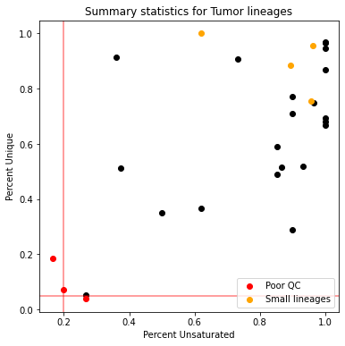
这张图概括了我们质量控制过滤的工作。每个点对应一个肿瘤，其颜色表示它的过滤状态：
被标为 红色 的肿瘤会被过滤掉，因为它们要么独特状态太少，要么可用于重建的特征太少
被标为 橙色 的肿瘤会被过滤掉，因为它们太小、不足以用于重建（我们采用 100 个细胞的过滤阈值）
被标为 黑色 的肿瘤已通过我们的质量控制过滤，将被纳入重建考虑。
肿瘤 3726_NT_T1 看起来是一个追踪数据质量令人满意的谱系，我们将用 Cassiopeia 重建这个肿瘤的谱系。
17.5.4.3. 重建选定的肿瘤3726_NT_T1)#
为了重建谱系，我们必须把某个特定肿瘤的等位基因表（allele table）转换成一个“字符矩阵”。如上所定义，这些数据结构概括了每个细胞中每个靶位点上观察到的突变。默认情况下，未切割的位点标为 0，缺失的位点标为 -1，矩阵中所有其他值都对应于独特的 indel。
肿瘤 3726_NT_T1 看起来是一个追踪数据质量令人满意的谱系，我们将用 Cassiopeia 重建这个肿瘤的谱系。
tumor = "3726_NT_T1"
tumor_allele_table = primary_nt_allele_table[primary_nt_allele_table["Tumor"] == tumor]
n_cells = tumor_allele_table["cellBC"].nunique()
n_intbc = tumor_allele_table["intBC"].nunique()
print(
f"Tumor population {tumor} has {n_cells} cells and {n_intbc} intBCs ({n_intbc * 3} characters)."
)
Tumor population 3726_NT_T1 has 772 cells and 10 intBCs (30) characters.
(
character_matrix,
priors,
state_to_indel,
) = cas.pp.convert_alleletable_to_character_matrix(
tumor_allele_table, allele_rep_thresh=0.9, mutation_priors=indel_priors
)
character_matrix.head(5)
Dropping the following intBCs due to lack of diversity with threshold 0.9: ['ACTCTGCTCCAGATr2', 'ACTCTGCTCCAGATr3', 'GCCTACTTAAGTCCr1', 'GTTTATTTCCGTATr3', 'TATGATTAGTCGCGr1', 'TATGATTAGTCGCGr2', 'TGATATAAATCTTTr2', 'TTCCCTATTTGCTAr2', 'TGTTTTTGTCTGCAr1', 'ACAGGTGCTCAAATr1', 'ACAGGTGCTCAAATr2', 'ACAGGTGCTCAAATr3']
| r1 | r2 | r3 | r4 | r5 | r6 | r7 | r8 | r9 | r10 | r11 | r12 | r13 | r14 | r15 | r16 | r17 | r18 | |
|---|---|---|---|---|---|---|---|---|---|---|---|---|---|---|---|---|---|---|
| L6.TTTGTCACACATCCAA-1 | 1 | 1 | 1 | 1 | 1 | 1 | 1 | 1 | 1 | 1 | 1 | 1 | 1 | 1 | 1 | 1 | -1 | -1 |
| L6.TTTGGTTTCTGAGTGT-1 | 1 | 1 | 1 | 1 | 1 | 1 | 1 | 1 | 1 | 1 | 1 | 1 | 1 | 1 | 1 | 1 | 1 | 1 |
| L6.TTTGGTTCATGTAAGA-1 | 1 | 1 | 2 | 2 | 2 | 2 | 2 | 2 | 2 | 2 | 2 | 2 | 2 | 2 | 2 | 2 | 2 | 2 |
| L6.TTTGCGCAGCTCCTCT-1 | 1 | 2 | 3 | 3 | 3 | 3 | 1 | 3 | 3 | 3 | 1 | 1 | 3 | 3 | 3 | 3 | 3 | 0 |
| L6.TTTATGCTCGCCGTGA-1 | 1 | 1 | 1 | 1 | 1 | 1 | 1 | 1 | 1 | 1 | 1 | 1 | 1 | 1 | 1 | 1 | 4 | 0 |
17.5.5. 重建谱系#
推断系统发育有好几种算法，其中许多都能从 Cassiopeia 所用的通用字符矩阵格式出发来运行。正因如此，Cassiopeia 实现了若干可用于谱系重建的算法，而许多其他算法也可以使用通用的 CassiopeiaSolver API 来实现。最受欢迎的算法包括：
VanillaGreedy：一个简单高效、基于启发式的算法，适合作为谱系重建的初步尝试。它基于经典的 Gusfield 算法 [Gusfield, 1991] ，相关描述见 [Jones et al., 2020].
Neighbor-Joining：一个经典的、基于距离的算法，如下文所述 [Saitou and Nei, 1987].
UPGMA：一个高效的、基于距离的算法，它对样本之间如何关联做了特殊的假设。最初描述于 [Sokal, 1958].
ILPSolver：一种 Steiner 树（Steiner-Tree）优化推断算法的实现，如下文所述 [Jones et al., 2020]。这个算法很慢（通常无法扩展到约 1500 个细胞以上），但很精确。
HybridSolver：一种分而治之的混合算法，它用一个贪婪的自顶向下算法来划分数据，再用一个精确算法来攻克各子问题（即 ILPSolver）。描述于 [Jones et al., 2020].
对于手头这个教程，我们将使用 VanillaGreedySolver。其余的求解器来自 Cassiopeia 代码库 ，也可以作为替代方案接入。
为了进行推断，我们会实例化一个 CassiopeiaTree，这是 Cassiopeia 特有的数据结构，用于存储字符矩阵和谱系元数据，并提供专门用于操作树的工具。我们还会实例化一个 VanillaGreedySolver ，它会填充 tree 字段，该字段位于 CassiopeiaTree 对象。
面对如此多的算法，要选出“正确”的那个似乎令人望而生畏。因此，我们常建议用户用几种算法分别做推断以作比较。除此之外，用户还应把数据集的规模和以往的基准研究作为选择算法的标准。根据经验， HybridSolver 在可扩展性和精度之间取得了不错的平衡，而 Neighbor-Joining 则是一个便于比较的替代选择（Neighbor-Joining 还有一个优点：它属于不同类别的算法——基于距离而非基于字符——因此可能突出谱系中不同的部分）。就这里的教程而言，我们将使用 GreedySolver，因为它极其高效，往往可以在使用更精确（但更慢）的算法之前，先对数据做一次很好的初步分析。
tree = cas.data.CassiopeiaTree(character_matrix=character_matrix, priors=priors)
greedy_solver = cas.solver.VanillaGreedySolver()
运行 greedy_solver.solve 将进行树推断并填充 tree 字段，该字段位于 CassiopeiaTree 对象。
推断完成后，我们可以借助 Cassiopeia 的可视化库来研究得到的树结构。我们会注意到推断中存在一些错误，但总体而言，大群细胞似乎都被正确地放置了。如上所述，在部署更耗时、更复杂的算法之前，这可以作为对数据的一次很好的初步分析。
greedy_solver.solve(tree)
cas.pl.plot_matplotlib(tree, orient="right", allele_table=tumor_allele_table)
100%|██████████████████████████████████████████████████████████████████████████████████████████████████████████████████████████████████████████████████████████████████████████████████████████████████████████████████████████████████████████████| 30/30 [00:11<00:00, 2.71it/s]
(<Figure size 504x504 with 1 Axes>, <AxesSubplot:>)
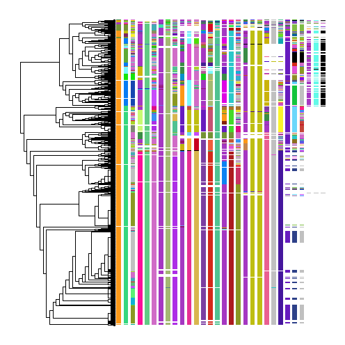
这种重建的可视化表示，对于评估算法性能非常有用。评估这些重建的性能可能相当困难，但随着实践会变得容易些。开始评估性能时的一个好技巧是：选定某一列，看某个给定的 indel 是否在彼此不相关的细胞组中出现了不止一次。这可能意味着存在算法错误。
可以看到，大多数细胞（热图中的行）都处于编辑状态相似的细胞邻域中。这样做的一个结果是：某些切割位点上的特定 indel 被干净地聚到了一起（例如从左数第 4 列中的粉色等位基因）。如果有多个等位基因把同一批细胞聚到一起，我们也可以对重建更有信心——例如第 4 列的粉色等位基因、第 6 列的浅紫色等位基因，等等。
不过，从这次重建中也能看出一些错误。例如，在第 4 列中，有两组都共享一个紫色等位基因的细胞被分开了。热图中还有其他等位基因表明它们本应被聚在一起，这说明这里存在一个算法错误。
正如我们上面所讨论的，由于分析者可以选用好几种算法， 应用几种算法来作比较，往往是有益的。
17.5.6. 从树上量化动态属性#
从树结构中了解关于这一群体的性质，具有生物学意义。一些常见的性质包括：
“扩张”事件的时间和位置（即出现一个能够比邻近群体增长更快的细胞群体）
单细胞的适合度（即相对增长率）
群体中的细胞状态变化次数（即可塑性）
细胞群体中常见的分化程序
还存在其他几项下游分析任务，而且这是一个不断壮大的研究领域。
下面我们举例说明如何使用 Cassiopeia 推断其中一些参数。
17.5.7. 推断扩张事件#
我们将使用 compute_expansion_pvalues 来计算树中某个特定内部节点产生一个更快速增长群体的概率。这一流程最早在下文中引入 [Yang et al., 2022]，它在树上执行深度优先搜索，并为每个内部节点标注一个概率：在中性进化模型下产生其后代数目的概率。该流程接受几个值得关注的超参数：
min_clade_size：纳入考虑的进化枝（clade，即某个内部节点之下的叶数）的最小规模。常见的情况是，过小的进化枝信息量不足。min_depth: 扩张开始所需的最小深度。min_depth为 0 表示根可被视为正在扩张；更合理的深度是 1（根下一层）。
通过这一流程，我们可以筛查各个节点，并标出正在发生扩张的位置。例如，在 [Yang et al., 2022]中，作者提出了一种标出最重要扩张事件的策略。下面，我们用红色标出一个有趣的扩张事件。
cas.tl.compute_expansion_pvalues(tree, min_clade_size=(0.15 * tree.n_cell), min_depth=1)
# this specifies a p-value for identifying expansions unlikely to have occurred
# in a neutral model of evolution
probability_threshold = 0.01
expanding_nodes = []
for node in tree.depth_first_traverse_nodes():
if tree.get_attribute(node, "expansion_pvalue") < probability_threshold:
expanding_nodes.append(node)
cas.pl.plot_matplotlib(tree, clade_colors={expanding_nodes[6]: "red"})
(<Figure size 504x504 with 1 Axes>, <AxesSubplot:>)
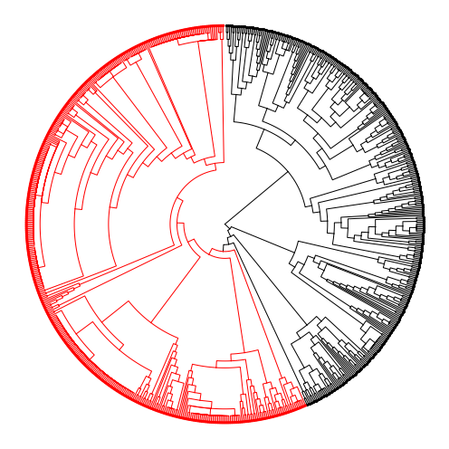
在标出扩张发生位置的同时，我们可以把树划分为侵袭性更强和更弱的亚群。我们用红色突出其中一个可能更具侵袭性的群体，因为它是一个被检测到的扩张。
在最初的研究中，作者发现，不同的转录模式 与 扩张区域 相关，而这些区域可能带来适合度优势。
17.5.7.1. 推断树的可塑性#
这个模型中的肿瘤由处于各种转录状态的细胞组成。该数据集的异质性，可以在它的低维投影上观察到，例如用 UMAP 计算出的投影：
kptracer_adata = sc.read_h5ad("KPTracer-Data/expression/adata_processed.nt.h5ad")
sc.pl.umap(
kptracer_adata,
color="Cluster-Name",
show=False,
title="Cluster Annotations, full dataset",
)
plt.show()
# plot only tumor of interest
fig = plt.figure(figsize=(10, 6))
ax = plt.gca()
sc.pl.umap(kptracer_adata[tree.leaves, :], color="Cluster-Name", show=False, ax=ax)
sc.pl.umap(
kptracer_adata[np.setdiff1d(kptracer_adata.obs_names, tree.leaves), :],
show=False,
ax=ax,
title=f"Cluster Annotations, {tumor}",
)
plt.show()
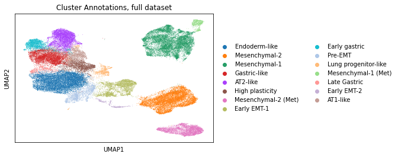
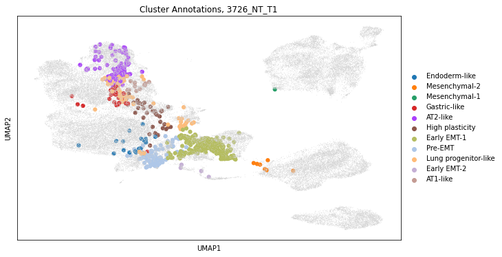
把单细胞转录组聚类在 UMAP 上可视化，会揭示出一个 连续的细胞状态谱 ，它可以充满整个肿瘤。正如作者所预期的，这些状态在先前的工作中已被描述过，这表明基于 CRISPR/Cas9 的记录并未明显扰乱肿瘤的发育。
我们也可以只取出我们感兴趣的肿瘤中的细胞，会观察到即便在这个 单个肿瘤中，细胞 也占据着各不相同的转录状态。
另外，我们可以把细胞状态的分配叠加到树的层次结构上，评估细胞状态的可遗传性。在可视化中可以看到，谱系的某些部分比其他部分更为混杂。
tree.cell_meta = pd.DataFrame(
kptracer_adata.obs.loc[tree.leaves, "Cluster-Name"].astype(str)
)
cas.pl.plot_matplotlib(tree, meta_data=["Cluster-Name"])
(<Figure size 504x504 with 1 Axes>, <AxesSubplot:>)
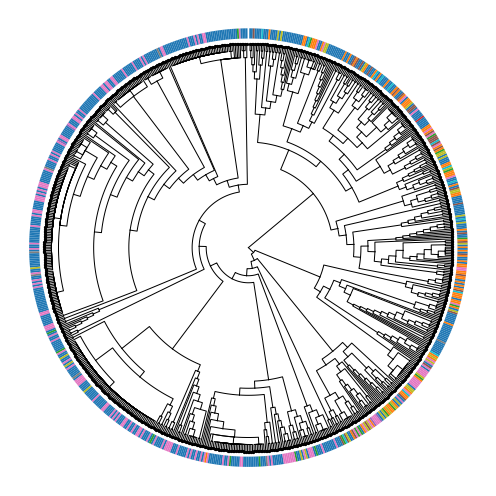
在上面的可视化中，树外侧的颜色条代表每个细胞的聚类注释。如果状态在几代之间非常稳定，我们会预期相邻细胞之间的状态分配高度一致。然而，从上图可以看到，细胞的状态往往与它最近的邻居不同（尤其是在系统发育树的右侧）。
这些细胞状态的不稳定性被称为“有效可塑性”，可以用几种算法来量化。一种方法是使用 Fitch-Hartigan 最大简约算法，推断细胞状态为产生所观察到的模式而必须发生改变的最少次数。这个功能在 Cassiopeia 中已实现，可按如下方式使用：
parsimony = cas.tl.score_small_parsimony(tree, meta_item="Cluster-Name")
plasticity = parsimony / len(tree.nodes)
print(f"Observed effective plasticity score of {plasticity}.")
Observed effective plasticity score of 0.2356902356902357.
这个有效可塑性分数是一个介于 0 到 1 之间的分数，表示谱系整体的混杂程度。0 分表示完全没有混杂，1 分表示每个细胞的状态都与它的姊妹细胞不同。
我们往往更关心有效可塑性的单细胞层面度量。我们可以按如下方式计算单细胞可塑性分数：
# compute plasticities for each node in the tree
for node in tree.depth_first_traverse_nodes():
effective_plasticity = cas.tl.score_small_parsimony(
tree, meta_item="Cluster-Name", root=node
)
size_of_subtree = len(tree.leaves_in_subtree(node))
tree.set_attribute(
node, "effective_plasticity", effective_plasticity / size_of_subtree
)
tree.cell_meta["scPlasticity"] = 0
for leaf in tree.leaves:
plasticities = []
parent = tree.parent(leaf)
while True:
plasticities.append(tree.get_attribute(parent, "effective_plasticity"))
if parent == tree.root:
break
parent = tree.parent(parent)
tree.cell_meta.loc[leaf, "scPlasticity"] = np.mean(plasticities)
cas.pl.plot_matplotlib(tree, meta_data=["scPlasticity"])
kptracer_adata.obs["scPlasticity"] = np.nan
kptracer_adata.obs.loc[tree.leaves, "scPlasticity"] = tree.cell_meta["scPlasticity"]
# plot only tumor of interest
fig = plt.figure(figsize=(10, 6))
ax = plt.gca()
sc.pl.umap(kptracer_adata[tree.leaves, :], color="scPlasticity", show=False, ax=ax)
sc.pl.umap(
kptracer_adata[np.setdiff1d(kptracer_adata.obs_names, tree.leaves), :],
show=False,
ax=ax,
)
plt.title(f"Single-cell Effective Plasticity, {tumor}")
plt.show()
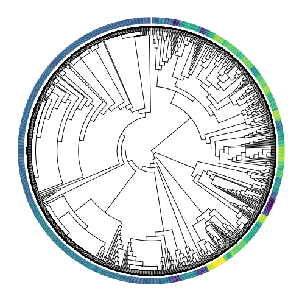
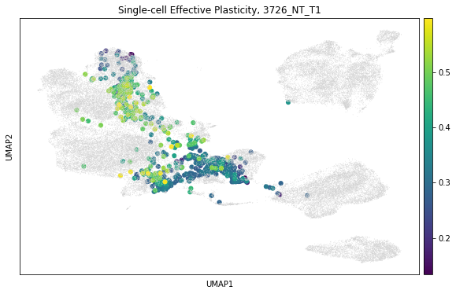
在比较 推定的有效可塑性 在树上和低维可视化上，我们可以观察到：正如预期，转录状态之间混杂更多的区域，其有效可塑性更高。我们还可以看到，有效可塑性似乎在“AT1-like”和“High-Plasticity”等“中间阶段”的聚类中更为富集。
关于这些模式的进一步讨论，我们建议读者参阅原始研究 [Yang et al., 2022].
17.6. 结论#
在本章中，我们概述了谱系追踪技术，并以一个最新的数据集为例，展示了基于 CRISPR/Cas9 的谱系追踪分析的案例研究。最后，在收尾之际，我们再指出一些额外的 资源 （用于谱系追踪分析和工具开发），同时也强调 关键要点 供新用户参考。
由于这是一个新兴领域，我们预计大规模时间序列谱系追踪数据集的数量会不断增加，并且会有专门为分析这类数据而设计的新型计算工具被开发出来， [Rodriguez-Fraticelli and Morris, 2022] 和 [Mukhopadhyay, 2022]。我们预计，主要的关注点将放在把基因表达与谱系信息相结合的方法上，从而为个体提供一幅更完整的生物学图景。此外，沿着下文详述的新方向，我们预计方法将聚焦于从时间序列数据进行轨迹推断。
17.7. 新方向#
17.7.1. 新的系统发育推断算法#
在新的谱系推断算法方面，有许多有前景的方向：
可扩展的贝叶斯推断：与更传统的系统发育算法的趋势相呼应，一个潜在的方向是把贝叶斯方法扩展到更大的输入规模。虽然大多数贝叶斯算法借助马尔可夫链蒙特卡洛（MCMC）来估计后验分布 [Huelsenbeck et al., 2001]，但变分推断的进展将大大提升贝叶斯算法的可扩展性 [Zhang and Matsen IV, 2018]。这种进展的概率性质，既能支持对树进行高通量的不确定性估计，也能自然地与 scVI 等其他单细胞转录组贝叶斯方法相契合 [Lopez et al., 2018].
改进的基于距离的算法：基于距离的算法的一个基本方面，是根据样本的突变数据和数据集的已知属性，来估计样本之间的相异度。有鉴于此，一个有前景的方向是：通过考虑突变发生的方式特性、以及特定突变可能性的先验，为演化型谱系追踪器开发统计上更稳健、更一致的相异度函数。这一点在 DCLEAR 上已经被证明是成功的 [Gong et al., 2021] 和 [Fang et al., 2022]。这一领域的持续进展将带来极大帮助，因为基于距离的算法能在多项式时间内运行，并在有了合适的相异度函数后产生非常准确的树。
17.7.2. 用于解读时间序列谱系追踪数据的计算工具#
包含时间序列信息的谱系追踪研究日益复杂，必须辅以能够把分析延伸到系统发育树构建之外的计算方法。也就是说，需要把多组学测量与谱系追踪和时间信息相结合的方法，从而能够还原出支配细胞状态、分化和行为的程序 [Mukhopadhyay, 2022].
由于这一领域才刚刚起步，现有工具的数量仍然有限，但仍值得介绍几种领先的方法：
LineageOT用于基于 CRISPR/Cas9 的演化型场景 [Forrow and Schiebinger, 2021]：一种通用方法，用于从带有谱系信息的 scRNA-seq 时间序列（每个时间点都配有谱系信息）中推断发育轨迹，适用于基于 CRISPR/Cas9 的演化型场景。该方法被提出作为 Waddington-OT [Schiebinger et al., 2019] 算法的扩展，在把细胞从较早时间点映射到较晚时间点时，把谱系关系也考虑在内。在计算跨时间点对的转移矩阵时，LineageOT 会根据细胞的谱系相似性，对较晚时间点的表达谱进行校正。这种方法已被成功应用于重建以下过程的时间序列： C. elegans 的发育过程。此外，通过模拟还证明了LineageOT能够准确恢复那些仅凭细胞状态测量无法恢复的复杂轨迹结构。欲了解更多细节和教程，请读者参阅 https://lineageot.readthedocs.io.CoSpar用于静态条形码谱系追踪数据 [Wang et al., 2022]：一种计算方法，从与静态条形码谱系追踪数据相结合的单细胞转录组学中推断细胞动力学。该方法基于关于生物学动态本质的两个基本假设：(i) 处于相似状态的细胞行为相似；(ii) 细胞会限制其可能的动态，从而给出稀疏的转变。CoSpar在造血、重编程和定向分化数据集上得到了演示。这些例子表明，CoSpar能够识别此前未被检测到的早期命运偏倚，预测与命运抉择相关的转录因子和受体。文档和详细示例见 https://cospar.readthedocs.io/.
17.7.3. 开发新的计算方法的资源#
虽然目前这套分析工具已经相当强大，但仍有很大的进一步发展空间。为便于今后的工作，我们介绍几种用于对算法做基准测试的工具：
Allen 研究所近期举办的 Lineage Reconstruction DREAM 挑战赛 [Gong et al., 2021] 生成了三个用于评估新算法的基准数据集。其中两个数据集是合成的（即模拟的），另一个则用 intMEMOIR [Chow et al., 2021] 技术生成。最近发表的结果，既揭示了成功算法的行为特征，也提供了获取这些基准数据集的途径 [Gong et al., 2021].
Cassiopeia-benchmark是 Cassiopeia 中的一个模块，允许用户高效地生成模拟谱系数据，用于对新的谱系重建算法做基准测试。虽然它很侧重于基于 CRISPR/Cas9 的演化型追踪器模拟，但其通用的模拟器 API 可以扩展以适应其他技术上的考量。作者提供了一份使用这套基准测试工具的详细操作指南，见 他们的网站.TedSim是一个模拟框架，不仅能模拟条形码数据，还能在谱系之上模拟转录组数据 [Pan et al., 2022]。这个模拟框架对于测试下游分析工具非常有用，例如那些旨在从谱系追踪数据推断发育轨迹的工具。
17.8. 参考文献#
Alexej Abyzov and Flora M Vaccarino. Cell lineage tracing and cellular diversity in humans. Annual Review of Genomics and Human Genetics, 21:101–116, 2020.
Anna Alemany, Maria Florescu, Chloé S Baron, Josi Peterson-Maduro, and Alexander Van Oudenaarden. Whole-organism clone tracing using single-cell sequencing. Nature, 556(7699):108–112, 2018.
Chris Bailey, James RM Black, James L Reading, Kevin Litchfield, Samra Turajlic, Nicholas McGranahan, Mariam Jamal-Hanjani, and Charles Swanton. Tracking cancer evolution through the disease course. Cancer discovery, 11(4):916–932, 2021.
Brent A Biddy, Wenjun Kong, Kenji Kamimoto, Chuner Guo, Sarah E Waye, Tao Sun, and Samantha A Morris. Single-cell mapping of lineage and identity in direct reprogramming. Nature, 564(7735):219–224, 2018.
Sara Bizzotto, Yanmei Dou, Javier Ganz, Ryan N Doan, Minseok Kwon, Craig L Bohrson, Sonia N Kim, Taejeong Bae, Alexej Abyzov, NIMH Brain Somatic Mosaicism Network†, and others. Landmarks of human embryonic development inscribed in somatic mutations. Science, 371(6535):1249–1253, 2021.
LL Cavalli-Sforza and AWF Edwards. The reconstruction of evolution. Ann. Hum. Genet, 27:105–106, 1963.
Michelle M Chan, Zachary D Smith, Stefanie Grosswendt, Helene Kretzmer, Thomas M Norman, Britt Adamson, Marco Jost, Jeffrey J Quinn, Dian Yang, Matthew G Jones, and others. Molecular recording of mammalian embryogenesis. Nature, 570(7759):77–82, 2019.
Junhong Choi, Wei Chen, Anna Minkina, Florence M. Chardon, Chase C. Suiter, Samuel G. Regalado, Silvia Domcke, Nobuhiko Hamazaki, Choli Lee, Beth Martin, Riza M. Daza, and Jay Shendure. A time-resolved, multi-symbol molecular recorder via sequential genome editing. Nature, 608(7921):98–107, Aug 2022. URL: https://doi.org/10.1038/s41586-022-04922-8, doi:10.1038/s41586-022-04922-8.
Ke-Huan K Chow, Mark W Budde, Alejandro A Granados, Maria Cabrera, Shinae Yoon, Soomin Cho, Ting-hao Huang, Noushin Koulena, Kirsten L Frieda, Long Cai, and others. Imaging cell lineage with a synthetic digital recording system. Science, 372(6538):eabb3099, 2021.
Michel DuPage, Alison L Dooley, and Tyler Jacks. Conditional mouse lung cancer models using adenoviral or lentiviral delivery of cre recombinase. Nature protocols, 4(7):1064–1072, 2009.
Weixiang Fang, Claire M Bell, Abel Sapirstein, Soichiro Asami, Kathleen Leeper, Donald J Zack, Hongkai Ji, and Reza Kalhor. Quantitative fate mapping: reconstructing progenitor field dynamics via retrospective lineage barcoding. bioRxiv, 2022.
Joseph Felsenstein. Evolutionary trees from dna sequences: a maximum likelihood approach. Journal of molecular evolution, 17(6):368–376, 1981.
Jean Feng, William S DeWitt III, Aaron McKenna, Noah Simon, Amy D Willis, and Frederick A Matsen IV. Estimation of cell lineage trees by maximum-likelihood phylogenetics. The Annals of Applied Statistics, 15(1):343–362, 2021.
Aden Forrow and Geoffrey Schiebinger. Lineageot is a unified framework for lineage tracing and trajectory inference. Nature communications, 12(1):1–10, 2021.
Kirsten L Frieda, James M Linton, Sahand Hormoz, Joonhyuk Choi, Ke-Huan K Chow, Zakary S Singer, Mark W Budde, Michael B Elowitz, and Long Cai. Synthetic recording and in situ readout of lineage information in single cells. Nature, 541(7635):107–111, 2017.
Ruli Gao, Shanshan Bai, Ying C Henderson, Yiyun Lin, Aislyn Schalck, Yun Yan, Tapsi Kumar, Min Hu, Emi Sei, Alexander Davis, and others. Delineating copy number and clonal substructure in human tumors from single-cell transcriptomes. Nature biotechnology, 39(5):599–608, 2021.
Alice Gerrits, Brad Dykstra, Olga J Kalmykowa, Karin Klauke, Evgenia Verovskaya, Mathilde JC Broekhuis, Gerald de Haan, and Leonid V Bystrykh. Cellular barcoding tool for clonal analysis in the hematopoietic system. Blood, The Journal of the American Society of Hematology, 115(13):2610–2618, 2010.
Moritz Gerstung, Clemency Jolly, Ignaty Leshchiner, Stefan C Dentro, Santiago Gonzalez, Daniel Rosebrock, Thomas J Mitchell, Yulia Rubanova, Pavana Anur, Kaixian Yu, and others. The evolutionary history of 2,658 cancers. Nature, 578(7793):122–128, 2020.
Wuming Gong, Alejandro A Granados, Jingyuan Hu, Matthew G Jones, Ofir Raz, Irepan Salvador-Martínez, Hanrui Zhang, Ke-Huan K Chow, Il-Youp Kwak, Renata Retkute, and others. Benchmarked approaches for reconstruction of in vitro cell lineages and in silico models of c. elegans and m. musculus developmental trees. Cell systems, 12(8):810–826, 2021.
Dan Gusfield. Efficient algorithms for inferring evolutionary trees. Networks, 21(1):19–28, 1991.
Lingjuan He, Yan Li, Yi Li, Wenjuan Pu, Xiuzhen Huang, Xueying Tian, Yue Wang, Hui Zhang, Qiaozhen Liu, Libo Zhang, and others. Enhancing the precision of genetic lineage tracing using dual recombinases. Nature medicine, 23(12):1488–1498, 2017.
John P Huelsenbeck, Fredrik Ronquist, Rasmus Nielsen, and Jonathan P Bollback. Bayesian inference of phylogeny and its impact on evolutionary biology. science, 294(5550):2310–2314, 2001.
Matthew G Jones, Alex Khodaverdian, Jeffrey J Quinn, Michelle M Chan, Jeffrey A Hussmann, Robert Wang, Chenling Xu, Jonathan S Weissman, and Nir Yosef. Inference of single-cell phylogenies from lineage tracing data using cassiopeia. Genome biology, 21(1):1–27, 2020.
Young Seok Ju, Inigo Martincorena, Moritz Gerstung, Mia Petljak, Ludmil B Alexandrov, Raheleh Rahbari, David C Wedge, Helen R Davies, Manasa Ramakrishna, Anthony Fullam, and others. Somatic mutations reveal asymmetric cellular dynamics in the early human embryo. Nature, 543(7647):714–718, 2017.
Reza Kalhor, Kian Kalhor, Leo Mejia, Kathleen Leeper, Amanda Graveline, Prashant Mali, and George M Church. Developmental barcoding of whole mouse via homing crispr. Science, 361(6405):eaat9804, 2018.
Naoki Konno, Yusuke Kijima, Keito Watano, Soh Ishiguro, Keiichiro Ono, Mamoru Tanaka, Hideto Mori, Nanami Masuyama, Dexter Pratt, Trey Ideker, and others. Deep distributed computing to reconstruct extremely large lineage trees. Nature Biotechnology, 40(4):566–575, 2022.
Kuo Liu, Hengwei Jin, and Bin Zhou. Genetic lineage tracing with multiple dna recombinases: a user's guide for conducting more precise cell fate mapping studies. Journal of Biological Chemistry, 295(19):6413–6424, 2020.
Kuo Liu, Muxue Tang, Hengwei Jin, Qiaozhen Liu, Lingjuan He, Huan Zhu, Xiuxiu Liu, Ximeng Han, Yan Li, Libo Zhang, and others. Triple-cell lineage tracing by a dual reporter on a single allele. Journal of Biological Chemistry, 295(3):690–700, 2020.
Romain Lopez, Jeffrey Regier, Michael B. Cole, Michael I. Jordan, and Nir Yosef. Deep generative modeling for single-cell transcriptomics. Nature Methods, 15(12):1053–1058, Dec 2018. URL: https://doi.org/10.1038/s41592-018-0229-2, doi:10.1038/s41592-018-0229-2.
Theresa B. Loveless, Joseph H. Grotts, Mason W. Schechter, Elmira Forouzmand, Courtney K. Carlson, Bijan S. Agahi, Guohao Liang, Michelle Ficht, Beide Liu, Xiaohui Xie, and Chang C. Liu. Lineage tracing and analog recording in mammalian cells by single-site dna writing. Nature Chemical Biology, 17(6):739–747, Jun 2021. URL: https://doi.org/10.1038/s41589-021-00769-8, doi:10.1038/s41589-021-00769-8.
Aaron McKenna, Gregory M Findlay, James A Gagnon, Marshall S Horwitz, Alexander F Schier, and Jay Shendure. Whole-organism lineage tracing by combinatorial and cumulative genome editing. Science, 353(6298):aaf7907, 2016.
Aaron McKenna and James A Gagnon. Recording development with single cell dynamic lineage tracing. Development, 146(12):dev169730, 2019.
Andras Nagy. Cre recombinase: the universal reagent for genome tailoring. genesis, 26(2):99–109, 2000.
Xinhai Pan, Hechen Li, and Xiuwei Zhang. Tedsim: temporal dynamics simulation of single-cell rna sequencing data and cell division history. Nucleic acids research, 50(8):4272–4288, 2022.
Anoop P Patel, Itay Tirosh, John J Trombetta, Alex K Shalek, Shawn M Gillespie, Hiroaki Wakimoto, Daniel P Cahill, Brian V Nahed, William T Curry, Robert L Martuza, and others. Single-cell rna-seq highlights intratumoral heterogeneity in primary glioblastoma. Science, 344(6190):1396–1401, 2014.
Jeffrey J Quinn, Matthew G Jones, Ross A Okimoto, Shigeki Nanjo, Michelle M Chan, Nir Yosef, Trever G Bivona, and Jonathan S Weissman. Single-cell lineages reveal the rates, routes, and drivers of metastasis in cancer xenografts. Science, 371(6532):eabc1944, 2021.
Bushra Raj, James A Gagnon, and Alexander F Schier. Large-scale reconstruction of cell lineages using single-cell readout of transcriptomes and crispr–cas9 barcodes by scgestalt. Nature protocols, 13(11):2685–2713, 2018.
Alejo Rodriguez-Fraticelli and Samantha A Morris. In preprints: the fast-paced field of single-cell lineage tracing. Development, 149(11):dev200877, 2022.
Naruya Saitou and Masatoshi Nei. The neighbor-joining method: a new method for reconstructing phylogenetic trees. Molecular biology and evolution, 4(4):406–425, 1987.
Geoffrey Schiebinger, Jian Shu, Marcin Tabaka, Brian Cleary, Vidya Subramanian, Aryeh Solomon, Joshua Gould, Siyan Liu, Stacie Lin, Peter Berube, and others. Optimal-transport analysis of single-cell gene expression identifies developmental trajectories in reprogramming. Cell, 176(4):928–943, 2019.
Robert R Sokal. A statistical method for evaluating systematic relationships. Univ. Kansas, Sci. Bull., 38:1409–1438, 1958.
Bastiaan Spanjaard, Bo Hu, Nina Mitic, Pedro Olivares-Chauvet, Sharan Janjuha, Nikolay Ninov, and Jan Philipp Junker. Simultaneous lineage tracing and cell-type identification using crispr–cas9-induced genetic scars. Nature biotechnology, 36(5):469–473, 2018.
John E Sulston, Einhard Schierenberg, John G White, and J Nichol Thomson. The embryonic cell lineage of the nematode caenorhabditis elegans. Developmental biology, 100(1):64–119, 1983.
Samra Turajlic and Charles Swanton. Metastasis as an evolutionary process. Science, 352(6282):169–175, 2016.
Sadie VanHorn and Samantha A Morris. Next-generation lineage tracing and fate mapping to interrogate development. Developmental cell, 56(1):7–21, 2021.
Bert Vogelstein, Nickolas Papadopoulos, Victor E Velculescu, Shibin Zhou, Luis A Diaz Jr, and Kenneth W Kinzler. Cancer genome landscapes. science, 339(6127):1546–1558, 2013.
Daniel E Wagner and Allon M Klein. Lineage tracing meets single-cell omics: opportunities and challenges. Nature Reviews Genetics, 21(7):410–427, 2020.
Shou-Wen Wang, Michael J Herriges, Kilian Hurley, Darrell N Kotton, and Allon M Klein. Cospar identifies early cell fate biases from single-cell transcriptomic and lineage information. Nature Biotechnology, pages 1–9, 2022.
Caleb Weinreb, Alejo Rodriguez-Fraticelli, Fernando D Camargo, and Allon M Klein. Lineage tracing on transcriptional landscapes links state to fate during differentiation. Science, 367(6479):eaaw3381, 2020.
Tamily A Weissman and Y Albert Pan. Brainbow: new resources and emerging biological applications for multicolor genetic labeling and analysis. Genetics, 199(2):293–306, 2015.
Mollie B Woodworth, Kelly M Girskis, and Christopher A Walsh. Building a lineage from single cells: genetic techniques for cell lineage tracking. Nature Reviews Genetics, 18(4):230–244, 2017.
Dian Yang, Matthew G Jones, Santiago Naranjo, William M Rideout III, Kyung Hoi Joseph Min, Raymond Ho, Wei Wu, Joseph M Replogle, Jennifer L Page, Jeffrey J Quinn, and others. Lineage tracing reveals the phylodynamics, plasticity, and paths of tumor evolution. Cell, 185(11):1905–1923, 2022.
Zizhen Yao, John K Mich, Sherman Ku, Vilas Menon, Anne-Rachel Krostag, Refugio A Martinez, Leon Furchtgott, Heather Mulholland, Susan Bort, Margaret A Fuqua, and others. A single-cell roadmap of lineage bifurcation in human esc models of embryonic brain development. Cell stem cell, 20(1):120–134, 2017.
Cheng Zhang and Frederick A Matsen IV. Variational bayesian phylogenetic inference. In International Conference on Learning Representations. 2018.
17.9. 贡献者#
我们衷心感谢以下人员的贡献：
17.9.2. 审阅者#
Aaron McKenna
Lukas Heumos